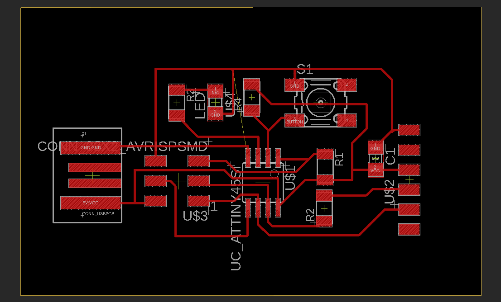

Project 1 - Manufacturing, Designing and Programming embedded systems.
Add picture of final outcome here.Project description
The project is split into 5 subprojects which are intertwined:- Circuit design
- Manufacturing electronic circuits
- Programming microcontrollers
- Use of output devices
- Use of input devices
What is needed for the project?
Software- Autodesk Eagle (For PCB design)
- Inkscape (For PCB board machining)
- Arduino (For programming)
- Brian FabISP
- Hafliði Ásgeirsson youtube channel (course teacher)
- CNC - machine
- PCB components (see Brian FabISP)
- Multimeter (for mesuring circuit connections)
Circuit design
I designed the circuit in Autodesk Eagle and used Hafliði´s youtube video as guidance. Following the steps in the youtube video should be sufficient to design the circuit, although running into small computer errors is unavoidable. Then I recommend JFGI (just fucking googling it) that usually works within a few minutes. However if it goes unsolved for more than 10-15 minutes and frustration is begining to build up I reccomend asking a fellow student first and then asking the teachers, as teachers connstantly have to answer stupid questions. This part of the project was rather easy compared to other parts of the project and it took the least amount of time (approximately 6 hours). I do not remember any specific obstacles except that I made the circuit to big the first time and had to shrink it (make it more compact) before manufacturing.
Manufacturing electronic circuits
After the design is completed the circuit must be preprocessed before being manufactured. We start by turning off all layers except top in Eagle and then export image file. This image is imported into Inkscape where it is fitted to the Traces PNG from Brian FabISP to make sure it has not undergone any resizing. Extra material is then removed to make it more compact and the edges rounded. When both traces and outline images are complete they are exported and imported into MIT PNG to g-code where a few factors need to be set acording to the CNC-machine being used. This is the last preprocessing step before manufacturing.
Adjusting the CNC-machine.
Parametrískt geirnelgt (pressfit) módel samsett af byggingareiningum - 12 klst ?
Verkefnislýsing
Módelið þarf að vera skalanlegt á mismunandi máta (efnisþykkt, hæðir og breiddir sem nemandi velur), útfært með parametrum í hugbúnaði að eigin vali. Mælt er með Autodesk Fusion 360 til að teikna hlutinn ef nemandi vill fá aðstoð kennara, en hafi nemandi tök á því að nota t.d. Solidworks eða Rhino 3D + Grasshopper þá er það í lagi. Ef hönnunin samanstendur af byggingar einingum (nokkurnskonar púsluspili sem hægt er að raða saman á mismunandi máta) kemur það til hækkunar við mat á verkefni. Hægt er að velja um tvö mismunandi efni fyrir geislaskerann.
- 4mmx500mmx500mm birkikrossviður 3.000 kr.
- 3mmx500mmx500mm akríl (Glært, svart eða hvítt)
Hugmyndavinna
- Leikfang (dífingar maður, stökkbretti og sundlaug)
- Skíðafestingar fyrir skíðaskápinn (Arnór)
- Box með vikudögunum á fyrir blautmatinn hans Dreka (köttur)
- Snjóbrettafestingar fyrir skíðaskápinn
- Ljóslukt með listaverki á hliðum
Hvers vegna varð ljóslukt fyrir valinu?
Ljósluktin varð fyrir valinu vegna þess að leikfangið er auðveldara að gera með 3D prentun. Skíða og snjóbrettafestingar hefðu ekki virkað nógu vel fyrir skíðaskápinn heima (ég gerði mælingar) og auk þess fannst mér ekki spennandi að "stela" hugmynd annarra. Kattarmatarboxið hefði getað orðið fyrir valinu en ég fann einfaldari lausn til að skammta Dreka 2 pakka á dag (stundum fékk hann 3 eða 4 pakka og þá kastaði hann upp, greedy bastard). Lausnin var einfaldlega að festa 2 pakka saman með bréfaklemmu og búa þannig til 7 x 2 skammta á hverjum mánudegi.
Grunn málsetningar
Málsetningarnar sem skipta mestu máli eru stærð kertis og brunasvæðið (svæðið umhverfi kertalogann).
Stærð á kertum og yfirborðsflatarmál á ljóslukt
4*(Hæð + eldur)*(þvermál + eldur) + 2*(þvermál + eldur)^2
- Hæð = 10cm, Þvermál = 7 cm, Lukt =
Ég komst að því að of erfitt væri að hafa myndirnar skalanlegar því ákvað ég að sleppa því.
Hönnun á boxinu
Hönnunarforsendur fyrir boxið voru að það átti að vera press fit og parametrískt. (setja inn mynd af plötu + mynd af parametrum). Ég hannaði hliðarplöturnar þ.a. allar hliðar væru eins, þ.e. ef plötunni er snúið um 90° þá lítur hún alveg eins út. Ástæðan fyrir þessari hönnun var að þá skiptir ekki máli hvernig myndinni er stillt upp á plötuna áður en hún er skorin út. Þetta skiptir máli þar sem boxið er ferningur en ekki rétthyrningur og því er ekki ljóst hvaða hlið snýr upp. Þó að margir telja að þeir myndu ekki snúa myndunum vitlaust þá tók ég eftir að þó nokkrir límdu límmiðan sem þeir skáru út með vínilskeranum öfugt á tölvuna sína (þeir viðurkenna það þó ekki).
Offset: Til að tryggja að plöturnar haldist saman þurfa þær að vera press fittaðar. Þegar laserskurðurinn fer fram þá fylgir laserinn ákveðnu skurðarferli (þ.e. fer eftir miðjum línum sem eru teiknaðar). Laserinn hefur ákveðinn radíus og nauðsynlegt er að taka þá stærð inn í reikninginn við press fit hönnun. Til að meta þennan radíus þá er gert kerf próf. Kerf próf fer þannig fram að skorinn er út ferhyrningur eða margir ferhyrningar sem eru teiknaðir með ákeðinni stærð (t.d. 10mm á lengd) í tölvuforriti . Raunveruleg lengd ferhyrnings eftir skurð er mæld og mismunur milli teiknaðrar og raunverulegrar lengdar reiknaður. Þessi mismunur er kerfið sem er jafnt tvöföldum radíusnum. Kerfið sem ég fékk var kerf = 0,22mm. Ég setti þennan parameter inn í inventor. Einfaldasta lausnin til að raunverulegar lengdir yrðu þær sömu og var áætlað var að nota offset skipunina á loka sketchinum. Því fylgdi þó vandamál þar sem nú voru allar línurnar tvöfaldar. Til að fá einfaldar línur extrudaðai ég offset sketchinum og notaði aftur project geometry til að búa til nýjan sketch og þá var ég kominn með einfaldar línur.
Teikning undirbúin fyrir laserskurð: Hægri klikkað er á sketchin og exportað honum sem dxf skrá. Þá er hægt að setja hana inn í inkscape og velja sömu stillingar og fyrir vínilskeran. Þá er ekki hægt að gera meira fyrr en þú kemmst í VR3 tölvuna sem er tengd við laserskerann. Þegar þú ert búinn að flytja skránna yfir í VR3 tölvuna þá opnaru hana í inkscape og velur print. Þá opnast gluggi þar sem þú sérð viðarplötuna (eða plast) og þá þarftu að staðsetja teikninguna á plötunni og velja þrjár stillingar:
linkur hvernig á að breyta Png yfir í svg. https://sudbury.ma.us/library/wp-content/uploads/sites/380/2018/11/tracing-bitmap-in-inkscape.pdf
ungroup and grouping
Hvernig á að skera út línur sem eru með sameiginlega skurðpunkta. Fyrst þarf að loka forminu ef það er opið.